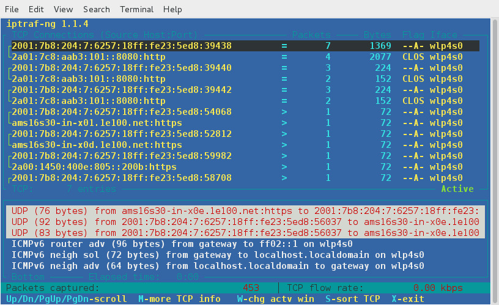
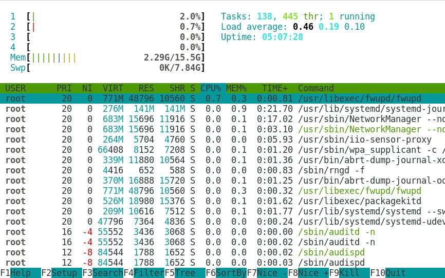

Measure and Troubleshoot Resource Usage (200.1)
Measure and Troubleshoot Resource Usage¶
Objectives¶
Candidates should be able to measure hardware resource and network bandwidth, identify and troubleshoot resource problems.
Key Knowledge Areas:¶
-
Measure CPU usage
-
Measure memory usage
-
Measure disk I/O
-
Measure network I/O
-
Measure firewalling and routing throughput
-
Map client bandwith usage
-
Match / correlate system symptoms with likely problems
-
Estimate throughput and identify bottlenecks in a system including networking
Terms and utilities:¶
-
iostat -
iotop -
vmstat -
netstat -
ss -
iptraf -
pstree, ps -
w -
lsof -
top -
htop -
uptime -
sar -
swap
-
processes blocked on I/O
-
blocks in
-
blocks out
-
networknetwork
iostat¶
Note
Depending on the version of your Linux distribution it may
be necessary to install a package like Debian sysstat to access tools
like iostat, sar, mpstat, etc. The Debian procps package contains
utilities like free, uptime, vmstat, w, sysctl etc.
The iostat command is used for monitoring system input/output
(I/O) device load. This is done by observing the time the
devices are active in relation to their average transfer
rates. Without any options, the iostat command displays
statistics since the last system reboot. When interval and count
arguments are passed to iostat, statistics for each specified time
interval are added to the output. The -y option can also be
used to suppress statistics since the last reboot.
Usage:
1 | |
Examples:
1 2 3 4 5 6 7 8 9 10 11 12 13 14 15 16 17 18 19 20 21 22 23 24 25 26 27 28 29 30 31 32 33 34 35 | |
iotop¶
The iotop command is similar to the top command. It shows I/O
usage information output by the Linux kernel and displays a table of
current I/O usage by processes or threads on the system.
iotop displays columns for the I/O bandwidth read and written by each
process/thread during the sampling period. It also displays the
percentage of time the thread/process spent while swapping in and while
waiting on I/O. For each process, its I/O priority (class/level) is
shown. In addition, the total I/O bandwidth read and written during the
sampling period is displayed at the top of the interface.
Usage:
1 | |
Example:
1 2 3 4 5 6 7 8 9 10 11 | |
vmstat¶
The vmstat command reports virtual memory statistics about processes, memory, paging,
block I/O, traps, and CPU utilization.
Usage:
1 | |
Example:
1 2 3 4 5 | |
Please beware that the first row will always show average measurements
since the machine has booted, and should therefore be neglected. Values
which are related to memory and I/O are expressed in kilobytes (1024
bytes). Old (pre-2.6) kernels might report blocks as 512, 2048 or 4096
bytes instead. Values related to CPU measurements are expressed as a
percent of total CPU time. Keep this in mind when interpreting
measurements from a multi-CPU system. - on these systems vmstat
averages the number of CPUs into the output. All five CPU fields should
add up to a total of 100% for each interval shown. This is independent
of the number of processors or cores. In other words: vmstat can NOT
be used to show statistics per processor or core (mpstat or ps
should be used in that case). vmstat will accept delay in seconds and
a number of counts (repetitions) as an argument, but the process and
memory measurement results will always remain to be instantaneous.
The first process column, "r" lists the number of processes currently allocated to the processor run queue. These processes are waiting for processor run time, also known as CPU time.
The second process column, "b" lists the number of processes currently allocated to the block queue. These processes are listed as being in uninterruptable sleep, which means they are waiting for a device to return either input or output (I/O).
The first memory column, "swpd" lists the amount of virtual memory being used expressed in kilobytes (1024 bytes). Virtual memory consists of swap space from disk, which is considerably slower than physical memory allocated inside memory chips.
The second memory column, "free" lists the amount of memory currently not in use, not cached and not buffered expressed.
The third memory column, "buff" lists the amount of memory currently allocated to buffers. Buffered memory contains raw disk blocks.
The fourth memory column, "cache" lists the amount of memory currently allocated to caching. Cached memory contains files.
The fifth memory column, "inact" lists the amount of inactive memory.
This is only shown using the -a option.
The sixth memory column, "active" lists the amount of active memory.
This is only shown using the -a option.
The first swap column, "si" lists the amount of memory being swapped in from disk (per second).
The second swap column, "so" lists the amount of memory being swapped out to disk (per second).
The first io column, "bi" lists the amount of blocks per second being received from a block device.
The second io column, "bo" lists the amount of blocks per second being sent to a block device.
The first system column, "in" lists the number of interrupts per second (including the clock).
The second system column, "cs" lists the number of context switches per second.
The cpu columns are expressed as percentages of total CPU time.
The first cpu column, "us" (user code) shows the percentage of time spent running non-kernel code.
The second cpu column, "sy" (system code) shows the percentage of time spent running kernel code.
The third cpu column, "id" shows the percentage of idle time.
The fourth cpu column, "wa" shows the percentage of time spent waiting for I/O (Input/Output).
The fifth cpu column, "st" (steal time) shows the percentage of time stolen from a virtual machine. This is the amount of real CPU time the virtual machine (hypervisor or VirtualBox) has allocated to tasks other than running your virtual machine.
netstat¶
The netstat command shows network connections, routing tables,
interface statistics, masquerade connections and multicast memberships.
The results are dependant on the first argument:
-
(no argument given)- all active sockets of all configured address families will be listed. -
--route, -r- the kernel routing tables are shown, output is identical toroute -e(note: in order to useroute, elevated privileges might be needed whereasnetstat -rcan be run with user privileges instead). -
--groups, -g- lists multicast group membership information for IPv4 and IPv6 -
--interfaces, -i- lists all network interfaces and certain specific properties -
--statistics, -s- lists a summary of statistics for each protocol, similar to SNMP output -
--masquerade, -M- lists masqueraded connections on pre-2.4 kernels. On newer kernels, usecat /proc/net/ip_conntrackinstead. In order for this to work, the ipt_MASQUERADE kernel module has to be loaded. This applies to 2.x and 3.x kernels.
Usage:
1 | |
Examples:
1 2 3 4 5 6 7 8 9 10 11 12 13 14 15 16 17 18 19 20 21 22 23 | |
ss¶
The ss command is used to show socket statistics. It can display
stats for PACKET sockets, TCP sockets, UDP sockets, DCCP sockets, RAW
sockets, Unix domain sockets, and more. It allows showing information
similar to the netstat command, but it can display more TCP and state
information.
Most Linux distributions are shipped with ss. Being familiar with this
tool helps enhance your understand of what's going on in the system
sockets and helps you find the possible causes of a performance problem.
Usage:
1 | |
Example:
1 2 3 4 5 6 | |
iptraf¶
The iptraf tool is a network monitoring utility for IP networks and can
be used to monitor the load on an IP network. It intercepts packets on
the network and displays information about the current traffic over it.
iptraf gathers data like TCP connection packet and byte counts,
interface statistics and activity indicators, TCP/UDP traffic
breakdowns, and LAN station packet and byte counts. IPTraf features
include an IP traffic monitor which shows TCP flag information, packet
and byte counts, ICMP details, OSPF packet types, and oversized IP
packet warnings.
Usage:
1 | |
Example:
1 | |

ps¶
Usage:
1 | |
The ps command shows a list of the processes currently running. These
are the same processes which are being shown by the top command. The
GNU version of ps accepts three different kind of options:
-
UNIX options - these may be grouped and must be preceded by a single dash
-
BSD options - these may be grouped and must be used without a dash
-
GNU long options - these are preceded by two dashes
These options may be mixed on GNU ps up to some extent, but bear in
mind that depending on the version of Linux you are working on you might
encounter a less flexible variant of ps. The ps manpage can be,
depending on the distribution being questioned, nearly 900 lines
long. Because of its versatile nature, you are encouraged to read
through the manpage and try out some of the options ps has to offer.
Examples:
1 2 3 4 5 6 7 8 9 10 11 12 13 | |
pstree¶
The pstree command displays the same processes as ps and top,
but the output is presented in a tree-like structure. The tree is rooted
at pid (or init if pid is omitted), and if a username is specified the
tree will root at all processes owned by that username. pstree provides
an easy way to track back a process to its parent process id (PPID).
Output between square brackets prefixed by a number are identical branches
of processes grouped together, the prefixed number represents the
repetition count. Grouped child threads are shown between square
brackets as well but the process name will be shown between curly braces
as an addition. The last line of the output shows the number of children
for a given process.
Usage:
1 | |
Example:
1 2 3 4 5 | |
w¶
The w command displays information about the users currently logged
on to the machine, their processes and the same statistics as provided
by the uptime command.
Usage:
1 | |
Example:
1 2 3 4 5 | |
Option -s stands for "short format".
lsof¶
The lsof command is used to list information about
open files and their corresponding processes. lsof will handle
regular files, directories, block special files, character special
files, executing text references, libraries, streams or network files.
By default, lsof will show unformatted output which might be hard to
read but is very suitable to be interpreted by other programs. The -F
option plays an important role here. The -F option is used to get
output that can be used by programs like C, Perl and awk. Read the
manpages for detailed usage and the possibilities.
Usage:
1 | |
The names argument acts as a filter here. Without options, lsof will
display all open files belonging to all active processes.
Examples:
1 2 3 4 5 6 7 8 9 10 11 12 13 14 | |
This last example causes lsof to search for all open instances of
directory /var/log and the files and directory it contains at its top
level.
free¶
The free command displays a current overview of the total amount of both
physical and swap memory on a system, as well as the amount of free
memory, memory in use and buffers used by the kernel.
The fourth column, called shared has been obsolete but is now used to display the memory used for tmpfs (shmem in /proc/meminfo)
Usage:
1 | |
Example:
1 2 3 4 5 | |
top¶
The top command provides a "dynamic real-time view" of a running system.
Usage:
1 | |
Example:
1 2 3 4 5 6 7 8 9 10 | |
Because of its interactive mode, the most important keys while operating
top are the help keys h or ? and the quit key q. The
following scheme provides an overview of the most important function
keys and their equivalent alternatives:
1 2 3 4 5 6 7 8 9 | |
htop¶
Usage:
1 | |
The htop command is similar to the top command, but allows you to
scroll vertically and horizontally, so you can see all the processes
running on the system, along with their full command lines. Tasks
related to processes (killing, renicing) can be done without entering
their PIDs.
Example:
1 | |

uptime¶
The uptime command shows how long the system has been running,
how many users are logged on, the system load averages for the past 1, 5
and 15 minutes and the current time. It support the -V option for
version information.
Usage:
1 | |
Example:
1 2 | |
sar¶
The sar command collects, reports or saves system activity information.
Usage:
1 | |
Examples:
1 2 3 4 5 6 7 8 9 10 11 12 13 | |
Without options, sar will output the statistics above.
Using the -d option sar will output disk statistics.
1 2 3 4 5 6 | |
The -b option switch shows output related to I/O and transfer rate
statistics:
1 2 3 4 5 6 | |
Some of the most important options to be used with sar are:
-
-cSystem calls -
-p and -wPaging and swapping activity -
-qRun queue -
-rFree memory and swap over time
Match / correlate system symptoms with likely problems¶
To troubleshoot a given problem, one must first be able to distinguish normal system behaviour from abnormal system behaviour.
In the previous section, a number of very specific system utilities as well as their utilization is explained. In this section, the focus lies on correlating these measurements and being able to detect anomalies, which in turn can be tied to abnormal system behaviour. Resource related problems have a very distinguishable factor in common:
They are the result of one or more resources not being able to cope with the demand during certain circumstances.
These resources might be related, but are not limited to: the CPU, physical or virtual memory, storage, network interfaces and connections, or the input/output between one or more of these components.
Estimate throughput and identify bottlenecks in a system including networking¶
To determine whether or not a certain problem is related to a lack of resources, the problem itself has to be properly formulated first. Then, this formulated "deviated" behaviour has to be compared to the expected behaviour which would result from a trouble-free operating system.
If possible, historical data from sar or other tools should be
investigated and compared to real-time tools like top,
vmstat, netstat and iostat.
Problems reported by either users or reporting tools are often related to availability: either resources aren't available in an orderly fashion or are unavailable altogether. Orderly fashion may be interpreted as "within an acceptable period of time" here. These kinds of issues are often reported because they are easily noticeable to users—i.e., it affects the user experience.
Examples of these kinds of issues might be certain files or (web) applications which aren't accessible or responding within a reasonable period of time. To adequately analyse such a situation, it may be useful to establish a baseline which dictates the "expected behaviour" of the program. This baseline should be established on a properly behaving system, and providing a threshold should also be considered.
If there is no baseline, resource measurements themselves may help to determine the root cause of a resource-related problem. If one of the resources mentioned above is at 100% of its capacity, for example, the existence of abnormal system behaviour should be easy to explain; finding the precise source of the issue, however, may require a bit more effort. The utilities presented in the previous chapter should be helpful here as well.
Examples:
1 2 3 4 | |
Identifying bottlenecks in a networking environment requires several steps. A best practice approach could be outlined as follows:
-
Create a map of the network
-
Identify time-dependent behaviour
-
Identify the problem
-
Identify deviating behaviour
-
Identify the cause